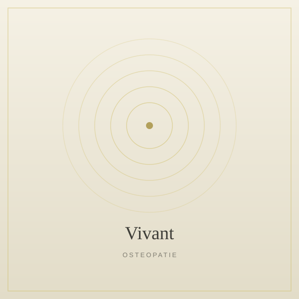
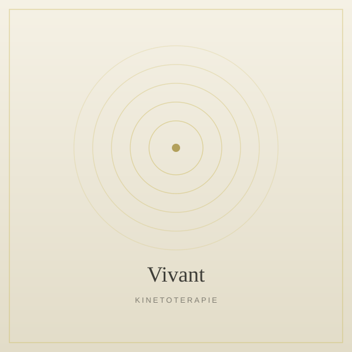
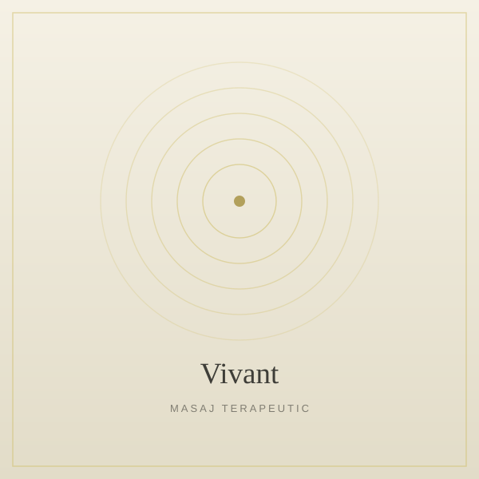
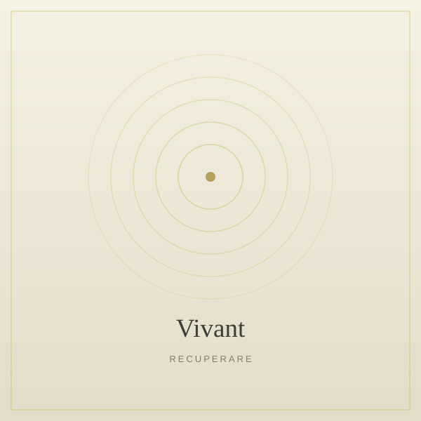

Combinăm mai multe discipline terapeutice pentru a aborda durerea, mobilitatea și recuperarea din toate unghiurile. Fiecare serviciu poate fi folosit individual sau ca parte dintr-un plan complex de recuperare.
Toate ședințele includ evaluare, tratament și recomandări personalizate pentru acasă — pentru rezultate care durează.

Osteopatia este o terapie manuală care folosește tehnici subtile pentru a restabili mobilitatea articulară, viscerală și cranio-sacrală. Privește corpul ca un întreg interconectat, identifică tiparele de tensiune și le elimină pentru a permite vindecarea naturală.
La Vivant, fiecare ședință începe cu o evaluare detaliată a posturii și a istoricului tău medical.
Fizioterapia folosește mișcarea, exercițiul terapeutic și agenți fizici pentru a restabili funcția musculo-scheletică. Este abordarea ideală pentru recuperarea după traumatisme, afecțiuni cronice sau intervenții chirurgicale.
Programele noastre sunt construite pe baza evaluării clinice și ajustate continuu în funcție de progres.

Kinetoterapia se concentrează pe exercițiul terapeutic supravegheat, conceput pentru a reeduca musculatura, a restabili amplitudinea de mișcare și a îmbunătăți coordonarea. Este componenta activă a procesului de recuperare.
Fiecare exercițiu este ales pentru tine și ajustat progresiv pentru a îți oferi rezultate sigure și durabile.
Terapia manuală combină mobilizările articulare, tehnici de țesut moale și manipulări specifice pentru a reduce durerea și a crește mobilitatea zonelor afectate. Este o intervenție precisă și eficientă.
Folosim tehnici validate clinic, alese în funcție de diagnosticul tău și reacția corpului în timpul ședinței.

Masajul terapeutic eliberează tensiunea acumulată în mușchi și țesut conjunctiv, îmbunătățește circulația și induce o stare profundă de relaxare. Este un complement excelent pentru osteopatie și fizioterapie.
Lucrăm cu intenție clinică, nu doar pentru relaxare — fiecare manevră are un scop terapeutic clar.

Programe specializate pentru reabilitarea după intervenții chirurgicale ortopedice, neurologice sau traumatisme severe. Lucrăm în etape, cu progresie controlată, pentru o recuperare sigură și completă.
Coordonăm planul de tratament cu medicul tău chirurg și ajustăm exercițiile în funcție de stadiul vindecării.